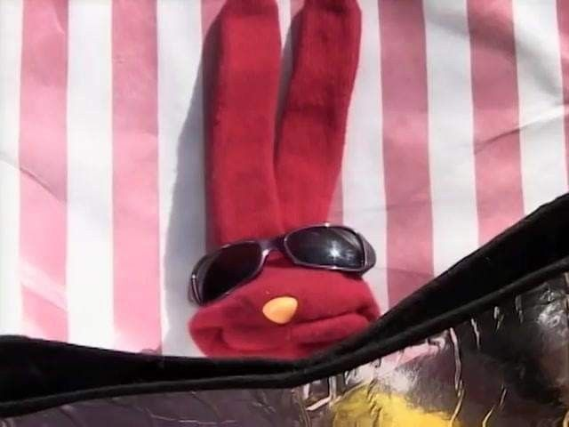

¿porque estar en la computadora, si no vas a escuchar los sonidos de la naturaleza?
Que se mete vieja con..
y si no se divierten... ¡los golpeo con mi guitarra!
En primera no soy su amigo, en segundo quien es usted, y en tercera que le importa

credito:sofis Gallagher